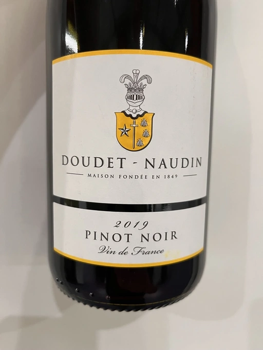

- Type
- Red Still, Dry
- Producer
- Doudet Naudin
- Vintage
- 2019
- Location
- France, Vin de Table
- Grapes
- Pinot Noir
- Alcohol
- 13
- Sugar
- 3
- Price
- 299 UAH
- Cellar
- N/A
Ratings
There are no ratings of this wine yet. It’s waiting for the right moment, which could be today, tomorrow or even in a year. Or maybe, I am drinking it at this moment… So stay tuned!